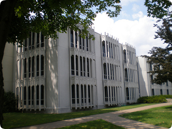

欧柏林学院始建于1833年，位于美国俄亥俄州克利夫兰西南35英里处一座宁静的小镇，是美国最好的文理学院之一，是大湖区学院联盟和俄亥俄州五学院联 盟成员之一。以浓厚的理想主义和多元化的人文思想而闻名，是自由精神和民主主义的先驱和领导。是美国第一所招收并授予黑人学生和女性学生学位的学校，在全 美大学综合排名居第22位。
大学由两部分组成：文理学院和音乐学院。分别有学生2200名和600名。其中国际学生占7%，来自50个国家，学校有中国学生55名。
文理学院:提供文理贯通知识广泛的基础教育。
音乐学院:欧柏林音乐学院是美国最好的音乐学院之一。成立于1865年的欧伯林音乐学院既是美国历史最悠久的音乐学院，也是美国第一家四年制大学学位 的音乐教育机构，享有世界声誉。音乐学院收藏了超过1500把世界名家制作的乐器.全世界最早及美国唯一的全斯坦威学校,学校拥有207架斯坦威三角钢 琴.它每年举办的活动众多，平均每年有500多场音乐会、演唱会和戏剧表演在校园内举办。每年举办的夏季音乐节吸引了来自世界各国的音乐家和乐迷。
国际学生只能申请秋季入学。值得一提的是，这所学校是少数几所提供给国际学生丰富奖学金和助学金的人文学院。
学校特色：
•毕业生申请和入读硕士和博士学位的人数为全美第一，很多名人都毕业于此。如孔祥熙、黄自、安娜•路易斯•斯特朗、罗西•迪雷等
•毕业生中有3位获得了理科诺贝尔奖；另外有5位毕业生获得MacArthur天才奖学金
•成立于1865年的欧柏林音乐学院，是美国最早成立的音乐学院.
院校设置：
文理学院由艺术人文系、社会和行为科学系、自然科学和数学系三部分组成。另设音乐学院和双学位项目，学生可同时申请文理学院和音乐学院的两个专业，通常需要5年毕业，还有一些跨学科专业。
强势专业：音乐、经济学、东亚研究、数学和自然科学(包括物理、化学、生物和神经学)
音乐学院下设专业，分别为：室内音乐、作曲、指挥与合奏、爵士乐、当代媒体音乐、音乐教育、音乐学、风琴与古典键盘、早期音乐、吉他、钢琴、弦乐、音乐理论、声乐、木管/铜管/打击乐器。
欧伯林音乐学院所设学位:
Bachelor of Music音乐本科学位(入学时需年满17周岁）
Performance Diploma演奏家文凭(入学时需年满17周岁）
Double-Degree Program双学位 （音乐本科学位+艺术本科或科学本科学位）
Masters in Historical Performance巴洛克演奏硕士学位
Master in Music Teaching (MMT)音乐教育硕士学位
Artist Diploma艺术家文凭（需完成本科学位）
欧柏林音乐学院接受托福和雅思成绩：
托福：60
雅思：6.0
托福递交号码：1587
如果您想更详细的了解欧伯林音乐学院的专业老师介绍，请点击以下连接：
http://new.oberlin.edu/conservatory/faculty/
如果您想更详细的了解欧柏林音乐学院的专业设置以及所有学位，请点击以下连接：
http://new.oberlin.edu/conservatory/degrees-and-majors/
如果您想更详细的了解欧伯林音乐学院招生办公室信息，请点击以下连接：
http://new.oberlin.edu/conservatory/admissions/auditions/dates.dot#Asia
12月1日前需提交的网上申请表连接：